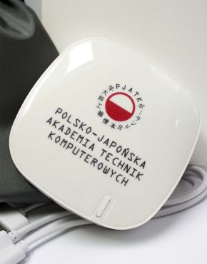

In January, PJATK gained open access to the Applied Science & Technology Source database. It is an extensive full-text database covering the full spectrum of applied sciences and computer science. It presents the accumulated knowledge on the challenges of traditional engineering and provides materials for research on the consequences of applying new technologies. The thematic scope of the database covers many fields in the field of applied sciences, from acoustics to aeronautics, robotics, biomedical engineering, neural networks and nuclear engineering. At the end of January, students of the Faculty of New Media Art presented the project " Places en Relation " at the Pompidou Center in Paris, which houses a museum of contemporary art. The project was part of the " Civic City " initiative which brings together people involved in design, architecture, graphics and students from 10 universities around the world. On April 24, the Scientific Council of the Institute of Literary Research of the Polish Academy of Sciences, in cooperation with PJAIT, resolved to establish new interdisciplinary doctoral studies in digital humanities. Research and didactic cooperation between literary scholars and computer scientists is to modernize humanities education by being rooted in digital technologies. At the same time, it provides IT specialists with knowledge about the latest trends in the science of literature, language and culture, in particular about the contemporary development of its digital research. In April, PJATK announced the creation of new Intercollegiate Interdisciplinary Doctoral Studies - Psychology & Informatics conducted in English together with SWPS University of Humanities and Social Sciences. Participants of the MISD-PI studies will learn both the trends present in traditional psychology and the latest techniques of collecting, analyzing and modeling data, including large sets. At the end of May, the Educational Foundation "Perspektywy" announced the annual ranking of universities. PJATK came fourth among non-public universities. The authors of the classification took into account criteria such as: scientific effectiveness, scientific potential, the situation of graduates on the labor market, internationalization, prestige, innovation and educational conditions. In June, the lecturer, Dr. Wojciech Domagalski, received the Silver Medal at the International Poster Biennale in Warsaw. 84 works of 78 artists from 18 countries were admitted to the competition in the open competition "Niepodległa". The competition was organized on the occasion of the celebration of the 100th anniversary of Poland regaining independence in 2018 and similar anniversaries in other countries of the region.
On March 2, an Agreement on Cooperation was signed between the State Fund for Rehabilitation of Disabled Persons (PFRON) and the Polish-Japanese Academy of Information Technology (PJATK) aimed at, inter alia, increasing employment of disabled people, preparation and implementation of the "studies without barriers" program, preparation of alternative forms of teaching materials, development and implementation of a program supporting IT education for disabled students of high schools and technical high schools. In April, PJATK and the Poster Museum in Wilanów organized a series of events under the umbrella of the "Women's Rights are Human Rights" initiative. The project was initiated by Professor Elizabeth Resnick, a recognized designer and retired lecturer at Massachusetts College of Art and Design in Boston. Exhibition project entitled Women Rights are Human Rights, was devoted to the phenomenon of the poster engaged on a global scale. In May, MEDIUM GALLERY at the Faculty of New Media Art PJATK in Warsaw presented the works of Józef Wilkoń, an excellent Polish illustrator, painter, sculptor and poster artist. The exhibition presents some of the last graphic works of the author, who after years of mastering the traditional graphic workshop turned to contemporary digital graphics technique. Also in May, at Galeria DAP at ul. Mazowiecka 11a in Warsaw, the exhibition of prof. Andrzej Kalina - "my POLISH journey" - presenting graphics and graphic installations from the period 1980 - 2017. The interactive diploma project of a graduate of the Faculty of New Media Art - Multimedia Studio, Aleksandra Stodulska, was presented in the main program of the International Biennale WRO 2017, which is one of the most important reviews of new media art in Europe. Diploma project entitled Lazy Eye, made in the Multimedia Studio, was shown at the Impulsy Samoistne exhibition. prof. Daniel Szczechura, a teacher at the 2D Animation Studio of the New Media Art Department, received the Dragon of Dragons main award at the Krakow Film Festival. This prize is awarded for exceptional contribution to the development of world cinematography. In June. The seventeenth edition of the Virtual University VU'2017 conference took place at PJAIT. The conference takes place under the agreement of four universities: the Warsaw University of Technology, the University of Warsaw, the Warsaw University of Life Sciences and the Polish-Japanese Academy of Information Technology. The conference deals with the most important issues of e-education in all areas and in all models. In June, the Central Commission for Scientific Degrees and Titles granted the PJAIT New Media Art Department the right to confer doctoral degrees in the field of fine arts. Thus, the Polish-Japanese Academy of Information Technology has become the first private university to have such qualifications. Currently, PJAIT is authorized to confer doctoral degrees in 3 scientific disciplines (computer science, mechanics, plastic arts) and a habilitated doctor in the field of computer science. In July, there was an exhibition TYPE DIRECTORS CLUB, whose partner is PJATK. The exhibition includes the best typographic and typeface designs from around the world. Type Directors Club is a professional non-profit organization; its mission is the typographic education of the international community of visual communication designers. In November, the team of PJAIT "Ninja-PJATK" takes part in the E-sport championship "Academic Polish Championship", taking 3rd place.
The Polish-Japanese Institute of Information Technology has launched new PhD studies in the field of Social Informatics. Two teams from the Polish-Japanese Institute of Information Technology took part in the national finals of the 11th edition of the Imagine Cup 2013 competition. They fought to represent Poland in the world finals in St. Petersburg. Nokia honored Michał Tomaszewski, lecturer at the Polish-Japanese Institute of Information Technology, with the Nokia Developer Champion title awarded to the most active promoters of Nokia developer technologies. The Polish-Japanese Institute of Information Technology took second place among non-public universities in Poland. These are the results of this year's edition of the Ranking of Universities prepared by the educational monthly Perspektywy and the Rzeczpospolita daily. Thus, moving up from the third to the second place in comparison with the last year's results. PJWSTK is also the best non-public technical university in Poland. In the list of all technical universities, it was ahead of, among others over a dozen public polytechnic schools. The Polish-Japanese Institute of Information Technology took the first place among all non-public academic universities in the country in the scientific ranking of Polish academic universities prepared by Polityka, which compared all academic universities in Poland in terms of the quality of science, research, etc. In the overall PJWSTK has overtaken many state-run colleges. In the same ranking, taking into account the division into specializations, PJWSTK was found as the only non-public technical university. Here, too, it turned out to be better than several public universities.